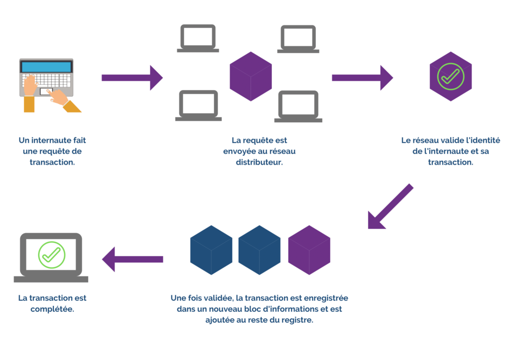

Blockchain et cryptomonnaies
Voir plusVeille Juridique
Blockchain et cryptomonnaies
Plongez au cœur d'une révolution numérique en constante évolution.
Dans un monde de plus en plus connecté, ces technologies novatrices ont bouleversé le paysage économique et financier, suscitant à la fois l'enthousiasme et l'inquiétude des acteurs juridiques.
Explorez les ramifications légales complexes qui entourent l'utilisation de la blockchain et des cryptomonnaies,
des défis réglementaires aux enjeux de confidentialité et de sécurité.
Notre veille vous tiendra informé(e) des dernières tendances, des décisions de justice marquantes et des développements
législatifs dans ce domaine en constante évolution.
Définition et concepts clés
La blockchain est une technologie de stockage et de transmission d'informations, basée sur un réseau décentralisé et sécurisé. Elle permet de créer un registre numérique des transactions qui est partagé entre les participants du réseau.
Chaque transaction est vérifiée par un processus de consensus, assurant ainsi l'intégrité des données. Les cryptomonnaies, quant à elles, sont des monnaies numériques qui utilisent la technologie de la blockchain pour sécuriser les transactions et controler
la création de nouvelles unités de monnaie.
Les transactions effectuées avec des cryptomonnaies sont enregistrées de manière permanente et transparente sur la blockchain, ce qui garantit leur traçabilité.
Évolution chronologique
1990
En 1989, le cryptographe renommé David Chaum crée DigiCash, une entreprise révolutionnaire dans le domaine des cryptomonnaies. Pionnière, elle propose l'utilisation de techniques de cryptographie avancées pour garantir la confidentialité des transactions entre utilisateurs. Introduisant eCash, une forme novatrice de monnaie numérique, DigiCash permet des transactions anonymes et sécurisées en ligne. Malgré cette avancée significative, l'entreprise connaît des difficultés financières et fait faillite en 1998.
2000
Divers projets de monnaie numérique ont émergé, mais ils ont échoué en raison de problèmes de confiance et de centralisation.
2008
En 2008, Satoshi Nakamoto dévoile le livre blanc de Bitcoin, introduisant la première cryptomonnaie basée sur la blockchain. Le concept de preuve de travail pour valider les transactions est inauguré. En janvier 2009, le réseau Bitcoin est lancé, permettant des transactions peer-to-peer via des adresses cryptographiques. Aujourd'hui, Bitcoin est utilisé mondialement, que ce soit comme classe d'actif, pour des investissements à long terme, ou pour des paiements internationaux, offrant des transactions quasi instantanées et à moindre coût.
2011
Plusieurs altcoins émergent en tant qu'alternatives à Bitcoin. Litecoin, créé par Charlie Lee, est l'un des premiers exemples. Litecoin a introduit des améliorations telles qu'un algorithme de minage différent (Scrypt) et des temps de bloc plus rapides. D'autres cryptomonnaies, comme Namecoin, Peercoin et Feathercoin, voient également le jour.
2013
Vitalik Buterin, un programmeur canadien d’origine russe, propose Ethereum, une plateforme de blockchain programmable. Ethereum permet l'exécution de contrats intelligents, des programmes autonomes capables d'automatiser des accords et des transactions. Ethereum utilise sa propre cryptomonnaie appelée Ether (ETH) pour alimenter son réseau. Cette innovation ouvre la voie à de nombreuses applications décentralisées (DApps) basées sur la blockchain.
Depuis 2017
En 2017, le marché des cryptomonnaies connaît une croissance exponentielle, attirant une attention médiatique sans précédent et suscitant un engouement mondial. Le prix du Bitcoin a atteint des sommets historiques et de nombreuses autres cryptomonnaies connaissent également des hausses significatives. Des projets tels que Ripple, Cardano, Stellar et NEO gagnent en prix.
Depuis 2018
Les régulateurs et les gouvernements commencent à se pencher sur les cryptomonnaies et la blockchain, avec des initiatives visant à encadrer ces technologies. Réglementations sur les échanges de cryptomonnaies : De nombreux gouvernements ont introduit des réglementations pour superviser les échanges de cryptomonnaies. Cela comprend l'obligation pour les plateformes d'échange d'obtenir des licences et de se conformer aux normes de lutte contre le blanchiment d'argent et le financement du terrorisme.
Depuis 2019
Facebook annonce son projet de cryptomonnaie, la Libra (rebaptisée plus tard Diem), suscitant des débats et des préoccupations réglementaires. Les banques centrales créent à explorer les monnaies numériques de banque centrale (CBDC), qui seraient émises et réglementées par les institutions.
Comment fonctionne la blockchain ?
Le processus de la blockchain comprend 5 étapes :

Conclusion
En conclusion, l'évolution de la blockchain et des cryptomonnaies au fil des années a suscité un intérêt croissant, mais également des défis juridiques complexes. Depuis les premières expérimentations dans les années 1990 jusqu'à l'émergence de Bitcoin en 2008, et la diversification des cryptomonnaies depuis, les implications légales ont été au centre des débats.
La réglementation, initiée principalement depuis 2018, témoigne de la volonté des gouvernements et des régulateurs de comprendre et d'encadrer ces technologies. Les défis incluent la supervision des échanges de cryptomonnaies, les questions de confidentialité et de sécurité, ainsi que l'émergence de nouvelles formes de monnaie numérique comme les stablecoins.
Les développements récents, tels que les projets de monnaie numérique de banque centrale (CBDC) et les préoccupations réglementaires liées à des initiatives comme la Libra/Diem de Facebook, montrent que le paysage juridique continuera d'évoluer.
La veille juridique a permis d'explorer ces complexités, mettant en lumière les enjeux tels que la confidentialité des transactions, la lutte contre le blanchiment d'argent, et la nécessité d'une régulation adaptée. Il est crucial de suivre de près ces évolutions pour comprendre et anticiper les changements juridiques à venir dans le domaine dynamique de la blockchain et des cryptomonnaies.